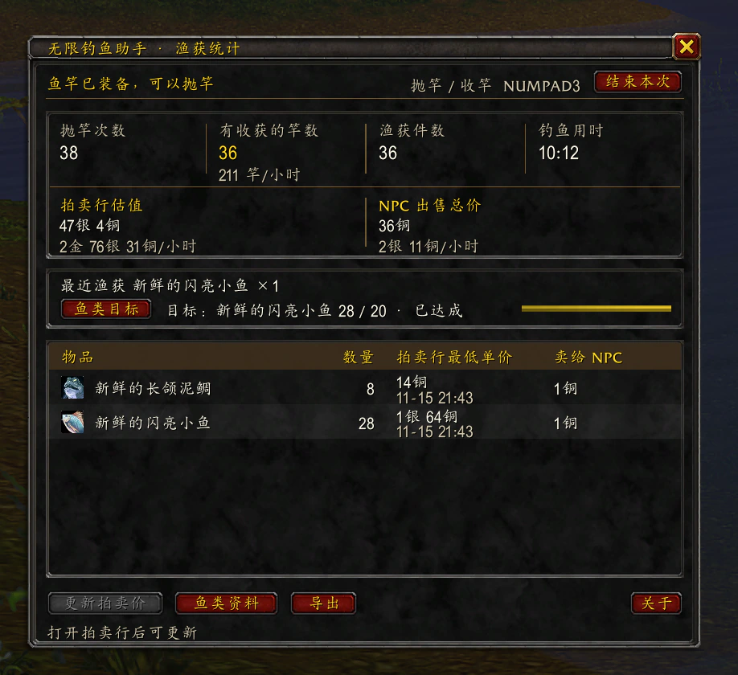

下载
《魔兽世界：无限》的钓鱼插件、WFDB Mac 客户端与相关工具。
客户端与工具
WFDB Mac 客户端
macOS 13+ · Apple 芯片和 Intel
安装和更新 BobberTally，整理游戏里的实钓记录用于投稿。
解压后将应用拖入「应用程序」再打开。v0.2.0 起支持自动更新，v0.1.0 用户需手动替换一次。
Apple 应用发布技能
Codex Skill · 简体中文
在 Codex 中处理 Mac 应用签名与公证，以及 iOS 应用上传和送审。
解压后，将 apple-app-release 文件夹放入 ~/.codex/skills/。